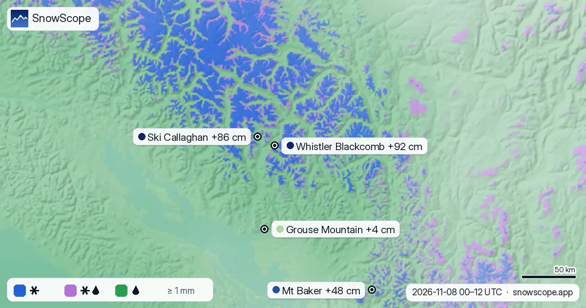

Sturm bei Whistler: etwa 92 cm in der Höhe, Regen an der North Shore
Ein feuchter Pazifiksturm erreicht die Coast Mountains. Unser Schneemodell gibt etwa 92 cm Neuschnee auf den oberen Pisten von Whistler Blackcomb vom 8. bis 10. November an, während die Berge über Vancouver meist Regen bekommen: 72 mm am Grouse Mountain bei nur 4 cm Schnee.
Die Live-Schneeprognose für Whistler Blackcomb in der SnowScope-AppSchneehöhen, Pulverschnee-Alarme und 3D-Karte, gratis.
Schnee in der Höhe, Regen weiter unten
Die Animation zeigt, wie sich der Sturm Tag für Tag aufbaut. Der meiste Neuschnee fällt im Hochgebirge nördlich von Squamish: 92 cm am Whistler Blackcomb und 86 cm am Ski Callaghan. Südlich der Grenze bekommt Mt Baker 48 cm.
An der North Shore sieht es anders aus. Cypress Mountain bekommt 68 mm Regen und 3 cm Schnee, Mt Seymour 75 mm Regen und gar keinen Neuschnee. Der Unterschied liegt in der Höhe: Diese Gebiete enden dort, wo der Sturm noch Regen bringt.


Wo liegt die Schneefallgrenze?
Über die Niederschlagsstunden liegt die Schneefallgrenze in der Region meist zwischen 1.190 und 2.230 m, mit einem Mittelwert nahe 1.620 m. Bei 2.000 m sollen etwa 70 % des Niederschlags als Schnee fallen; bei 1.500 m nur 28 %, mit 26 % Schneeregen und 46 % Regen.
In Whistler selbst liegt die 0-°C-Grenze während des Regens bei rund 2.100 m, sodass die Schneefallgrenze bei etwa 1.800 m liegt: Das Hochalpine bekommt Schnee, das Dorf und die tieferen Pisten meist Regen. Die Vorhersage gibt dort 110 mm Niederschlag vom 8. bis 12. November an.
Zahlen anzeigen
| Datum | Whistler Blackcomb (cm) | Ski Callaghan (cm) | Mt Baker (cm) | Sasquatch (cm) | Grouse Mountain (cm) |
|---|---|---|---|---|---|
| 8. November * | 65 | 58 | 25 | 20 | 3 |
| 9. November * | 1 | 1 | 1 | 0 | 0 |
| 10. November * | 26 | 30 | 22 | 4 | 1 |
Die Physik: ein warmer, feuchter Sturm trifft auf eine Bergwand
Die Luft vom Pazifik ist mild und voller Wasserdampf. Wenn der Wind sie gegen die Coast Mountains drückt, muss sie aufsteigen, kühlt ab, und der Dampf kondensiert zu starkem Regen und Schnee an den dem Wind zugewandten Hängen.
Weil die Luft mild ist, bleibt die 0-°C-Grenze hoch. Der Schnee schmilzt beim Fallen durch die wärmere Luft und wird etwa 300 m unterhalb der 0-°C-Grenze zu Regen. Ein paar Hundert Höhenmeter entscheiden also zwischen einem Pulvertag und einer Durchnässung.
Zahlen anzeigen
| Höhe (m) | Schnee % | Nasser Schnee / Schneeregen % | Regen % |
|---|---|---|---|
| 500 | 0 | 0 | 100 |
| 750 | 0 | 0 | 100 |
| 1.000 | 0 | 7 | 93 |
| 1.250 | 3 | 30 | 67 |
| 1.500 | 28 | 26 | 46 |
| 1.750 | 50 | 23 | 27 |
| 2.000 | 70 | 17 | 13 |
| 2.250 | 85 | 10 | 5 |
| 2.500 | 94 | 5 | 1 |
| 2.750 | 99 | 1 | 0 |
| 3.000 | 100 | 0 | 0 |
Was das für dich bedeutet
- Vorhersagen ändern sich: Prüfen Sie vor der Abfahrt noch einmal die aktuelle Schneekarte.
- Viel Neuschnee auf nasser Unterlage: Im freien Gelände zuerst den Avalanche-Canada-Lagebericht lesen.
- Auf der Sea-to-Sky-Strecke: im Tal Regen erwarten, auf den höheren Straßen Schnee.
Quellen und Nachweise
- Roe, G. H. (2005). Orographic precipitation. Annual Review of Earth and Planetary Sciences 33, 645-671. doi.org/10.1146/annurev.earth.33.092203.122541
- Minder, J. R., Durran, D. R. and Roe, G. H. (2011). Mesoscale controls on the mountainside snow line. Journal of the Atmospheric Sciences 68, 2107-2127. doi.org/10.1175/JAS-D-10-05006.1
- American Meteorological Society, Glossary of Meteorology: 'Orographic precipitation'. glossary.ametsoc.org/wiki/Orographic_precipitation
- American Meteorological Society, Glossary of Meteorology: 'Freezing level'. glossary.ametsoc.org/wiki/Freezing_level
- Wallace, J. M. and Hobbs, P. V. (2006). Atmospheric Science: An Introductory Survey, 2nd edition. Academic Press / Elsevier. ISBN 978-0-12-732951-2.
- Open-Meteo.com forecast API, ECMWF IFS 0.25° model (CC BY 4.0): hourly precipitation and temperature on pressure levels. open-meteo.com/en/docs/ecmwf-api
- SnowScope snow model and forecast maps (SnowScope, Atlas Labs). snowscope.app/
Zu diesen Zahlen
Neuschnee pro Skigebiet: SnowScope-Schneemodell (500-m-Raster, Wert für die oberen Pisten), 8. bis 10. November, Lauf vom 7. November. Schneefallgrenze: ECMWF IFS (über Open-Meteo), stündlicher Niederschlag und Temperaturprofil an 54 Punkten; Schneefallgrenze = 0-°C-Grenze minus 300 m, Schneeregen innerhalb von 150 m davon. Vorhersagen ändern sich.
Diesen Bericht zitieren
Für Forschung, Lehre oder Presse: Zahlen und Grafiken sind unter CC BY 4.0 mit dieser Quellenangabe frei nutzbar.
SnowScope (2026), Sturm bei Whistler: etwa 92 cm in der Höhe, Regen an der North Shore, https://snowscope.app/blog/de/2026/11/whistler-storm-snow-up-high-rain-below-8-10-november-2026.html, abgerufen am 2026-11-08
SnowScope (Atlas Labs). (2026, November 8). Sturm bei Whistler: etwa 92 cm in der Höhe, Regen an der North Shore. SnowScope snow reports. https://snowscope.app/blog/de/2026/11/whistler-storm-snow-up-high-rain-below-8-10-november-2026.html
BibTeX
@misc{snowscope2026whistlerstormsnowuphighr,
author = {{SnowScope (Atlas Labs)}},
title = {Sturm bei Whistler: etwa 92 cm in der Höhe, Regen an der North Shore},
year = {2026},
month = nov,
howpublished = {\url{https://snowscope.app/blog/de/2026/11/whistler-storm-snow-up-high-rain-below-8-10-november-2026.html}},
note = {Published 2026-11-08 14:35 UTC; accessed 2026-11-08}
}· CC BY 4.0 · Methoden, Daten und Werkzeuge →
Weitere Schneeberichte

Am meisten Schnee in Westkanada liegt in Silver Star: etwa 112 cm in den oberen Hängen, laut unserem Schneemodell. Danach kommen Big White (90 cm) …

Bis zum 9. November ergibt unsere Prognose 74 cm in Whistler Blackcomb, 63 cm in Ski Callaghan und 50 cm in Mount Cain Alpine Park. Die Werte der …

Mount Washington Alpine Resort (Kanada) hat heute den meisten Schnee in Westkanada, mit etwa 145 cm in den oberen Hängen. Es folgen Whistler …